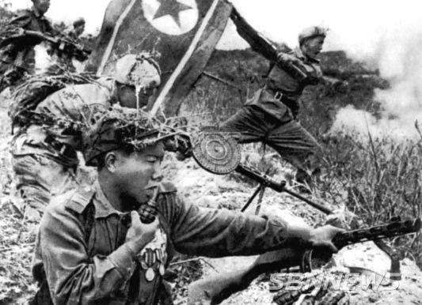

북한의 기습 남침
1950년 6월 25일,
북한군이 기습 남침했다
1950년 6월 25일 새벽 4시를 기해 북한지상군은 38도선을 넘어 일제히 기습 남침해 왔다. 북한 해군은 지상군 남침 개시 30분 전 해상으로 강릉, 옥계, 임원 등에 육전대와 유격대를 상륙시켰다.

동해로 긴급출동 명령을 받은 백두산함은 오후 3시 진해항에서 출항했다. 백두산함은 8시 12분 부산근해 항해 중 부산 동북방 30마일 해상에서 검은 연기를 발견했다.
○ 검은 연기쪽으로 접근, 오후 8시 30분경 미식별 선박으로 시각 확인 후 적아식별 시도
○ 정선명령에도 불응하자 적 선박으로 판단하여 해군본부에 사격명령 허가를 요청
○ 6월 26일 밤 0시 10분 해군본부로부터 사격명령을 받고 0시 30분에 적 선박에 사격개시, 쌍방간 교전
○ 교전결과 600여명의 무장병력이 탑승한 1천톤급 적무장선박 침몰(0135시), 백두산함 승조원 전병익 중사와 김창학 하사 전사